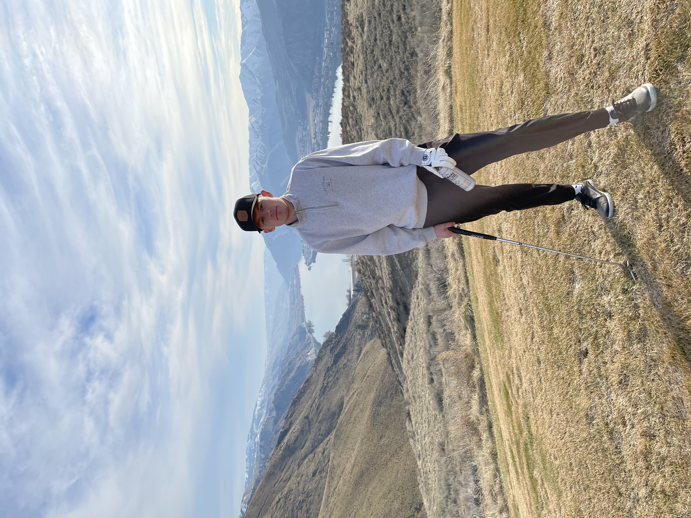

Traveling
Traveling holds a special place in my heart as it opens the door to a world of diverse cultures, breathtaking landscapes, and unforgettable experiences.
Exploring new destinations, meeting people from different walks of life ignites a sense of adventure and curiosity.
Costa Rica Destinations I Recommend:

Sports
I am passionate about sports because they are a constant source of joy, challenge, and personal growth in my life.
Engaging in sports brings a unique blend of physical activity and mental stimulation, allowing me to push my limits and discover the strength within myself.
Whether it's the thrill of competition, the camaraderie with teammates, or the sense of accomplishment after a hard-fought victory, sports offer a dynamic and fulfilling way to stay active and connected.
My Favorite Sports Teams:
